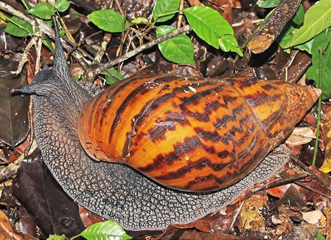

Giant African Land Snails

[Ejila (Igbo); Igbin (Nigeria); Ibi, Boi-de-oxalá (Brazil);
Achatina achatina and Archachatina marginata (West African)
and also Lissachatina fulicaof (East Africa), all of family
Achatinidae]
These giant snails, native to West Africa, can grow to almost 12 inches
long. They constitute a major protein source in some parts of West
Africa. In the United States they are considered agricultural pests
of the first order, and seized wherever found.
A. achatina has established itself in several Caribbean
islands and in Florida. A. marginata, aside from being an
agricultural pest, can carry nematodes that can cause blindness, brain
infection and death in humans. The most common Giant African Land Snail
in the Caribbean and Florida is the East African species
Lissachatina fulica.
Photo by Charles J. Sharp distributed under license
Creative Commons
Attribution-ShareAlike v4.0 International.
More on Culinary Snails.
Caution:
It is very important these snails be cooked
well before consumption to avoid very serious parasitic nematode
infections. Greens and vegetables that could possibly have been exposed
to them should be washed thoroughly and cooked. This may not apply to
farm hatched and raised snails which could never be exposed to rat
droppings from which to contract the parasites.
Buying:
Live snails are very unlikely to be found
sold for food in the United States. Here they are most valued as
pets. Some restaurants do import them frozen from Nigeria, which is
legal.
Shelling:
There are two methods. In Nigerian markets
the shells are broken up with a mallet, freeing the snail. A method
that preserves the shell is to put them in a pot and pour it full of
just boiled water and soak about 5 minutes. The snails are then pulled
out with a two pronged fork or similar.
Cleaning:
First, the gut sack is pulled from the foot
and discarded. An effective method of de-sliming is to scrub them with
salt and lime or lemon juice. Some people scrub them with Alum, which
works very well, but some say it softens the flesh, eliminating the
desirable crunch.
Cooking:
The foot is generally split in half. Snails
are pre-cooked in simmering water for 15 to 30 minutes before use in
recipes. After that, follow the recipe.
sf_gpafglsz 180609 - www.clovegarden.com
©Andrew Grygus - agryg@clovegarden.com - Photos
on this page not otherwise credited © cg1
- Linking to and non-commercial use of this page permitted